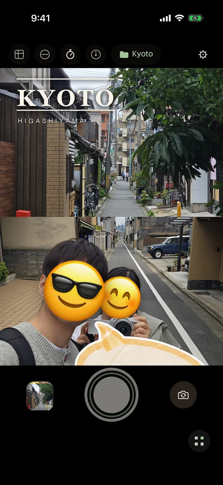
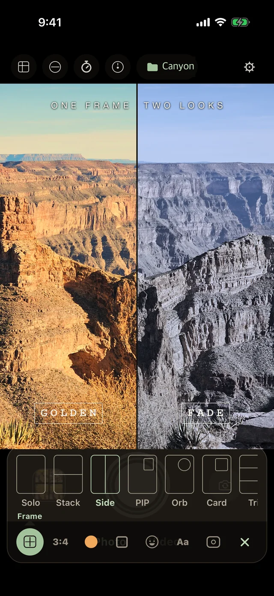
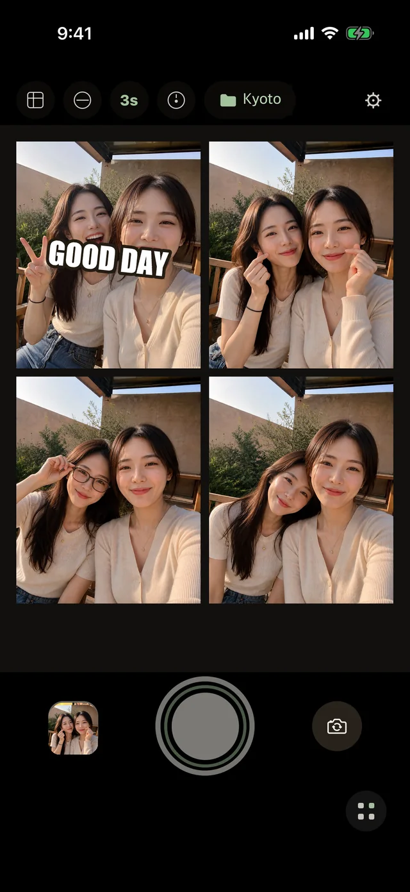
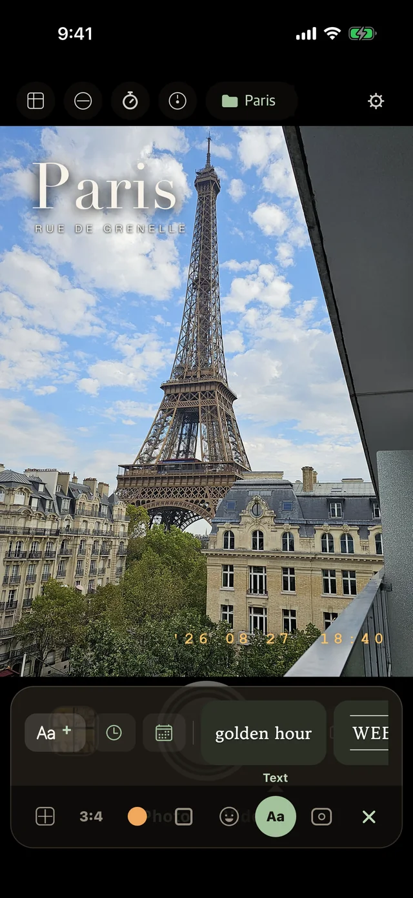
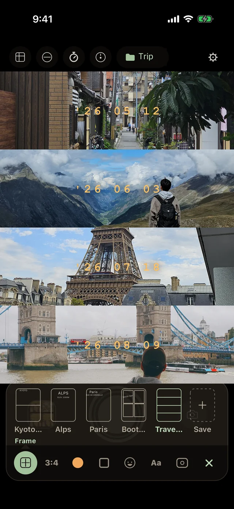

Front & back, at the same moment
Everyone's
in the shot.
Both cameras fire at the same moment, so the person taking the photo is in it too. Set the filter, the decoration and the folder first — wemera saves exactly what you saw.
No account Photos stay on your phone iOS 15.1 or later
One press of the shutter. The back camera takes the scene, the front camera takes you, and the two land in one photo. Move the small window to any corner and resize it.

Set it before you shoot
Decide first. Then press the shutter.
Most cameras make you fix things afterwards. wemera puts the choices before the shutter — the layout, the look, the decoration, even where it saves. What you see on screen is what gets saved.
Layout
Solo, Stack, Side, PIP, Orb, Card, Tri. Move and resize the small window.
Look
Golden, Fade, Chrome, Film 400, Film 100 — skin stays natural, the scene takes the look.
Decoration
Stickers, text in handwriting fonts, and a date stamp like a film engraving.
Folder
Pick a folder and every shot goes straight there. Kyoto, Alps, Paris.
The dock at the bottom holds everything.
Frame, Look, Decorate, Text, Folder — all reachable with one thumb while the viewfinder stays open. Nothing hides in a menu.

Simultaneous capture
Not two photos stitched together.
Both lenses fire at the same moment.
The scene in front of you and your face, in one file. Record video the same way — both cameras, up to 30 seconds, with stickers and text baked in.
Photo booth anywhere
Four frames, one strip, no booth.
Keep smiling — the next frame follows.
A voice countdown fills the strip frame by frame, so you can shoot alone. Retake only the one you don't like. Drop a photo from your album into any frame.

Decoration
Stickers, handwriting, and a film date.
Placed before the shutter, saved as seen.
Stickers go where you drop them. Make your own from a photo. Text comes in handwriting fonts and styles like tape and caption. The time and date can sit in the corner like a film engraving.

Your setups, saved as templates.
A frame, a look, a sticker and a folder together make a setup. Save it as My Template — Kyoto, Alps, Paris, Trip — and it's one tap next time.

Kept simple
Nothing between you and the shutter.
Silent shutter
Beside a sleeping baby, in a quiet cafe or a gallery. It saves from the video stream, so quality is a little lower — and it tells you so.
Stays on your device
No account, no sign-up. Photos are processed and saved only on your phone. wemera has no server.
Re-edit anytime
Change the template and the look on shots you already saved. Videos are rebuilt too. Sort into folders, browse by month.
Questions
Good to know
Which iPhones shoot with both cameras at once?
iPhone XS, XR and later. Earlier models still work — they shoot one camera at a time and wemera puts the two together.
Is it free?
Yes. Shooting, templates, looks and booth are free. You can keep up to 5 of your own templates and 20 of your own stickers.
Does it record video?
Yes — both cameras at once, up to 30 seconds, with stickers, text and the date stamp in the video.
Where do my photos go?
Into your photo library, in the folder you chose. wemera keeps nothing on a server.
Android?
An Android version exists in testing. It will be listed here when it's released.